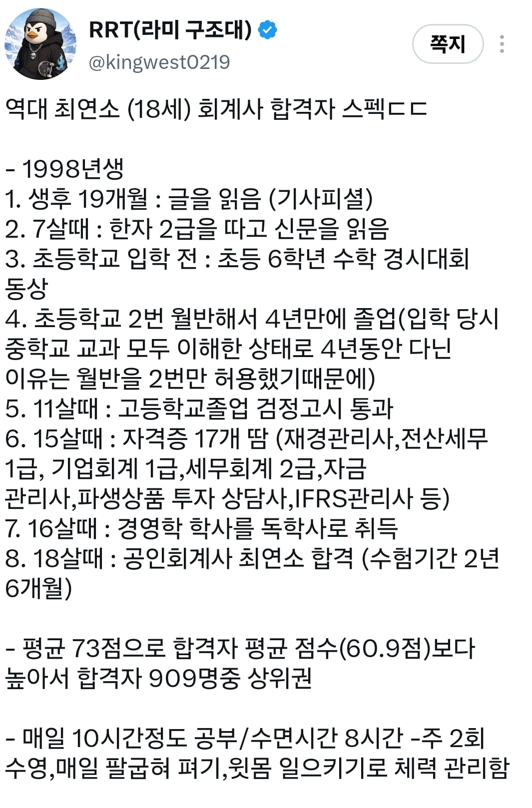
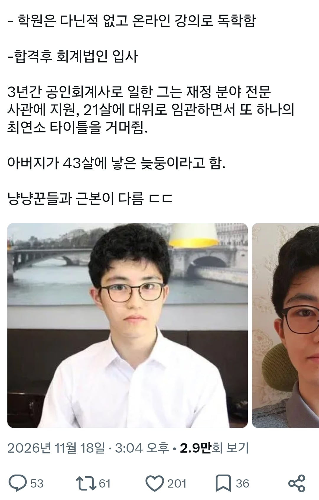

경영학학사를 독학사로 취득이 대체 먼소리임..? 혼자공부하고 검정시험보고 학사 땄다는것임?
학위과정중에 독학사란 것도 있음. 학점은행제와는 달리 말 그대로 시험쳐서 학위를 받는거라 난이도는 꽤 됨. 진짜 초패스트급4드론한거.
저러고 21세에 전문사관(재정병과)으로 대위임관까지 해서 최연소 장교 타이틀까지 쥠 ㅋㅋ
초등학교 월반 11살에 이미 고졸ㅋㅋㅋ 그냥 미쳤네 최연소 장교 최연소 공인회계사ㅋㅋ
장교도 그냥 장교가 아니라 대위부터 시작 ㄷㄷ
재정병과는 바로 대위 임관인거임?
공인회계사는 공인회계사로 근무한 경력 연수에 따라서 중위 또는 대위로 임관함
재정병과 중에서도 공인회계사 전문사관은 많지 않음
일주일에 두번만 자는거야? 독하다ㄷㄷ
아니.. 운동을.. 주 2회 수영한다고.ㅋㅋㅋㅋㅋ
주 2회 수면은 진짜 신박하네 ㅋㅋㅋ
남자는 용불용설 밎 후천적 유전형질 획득 개념으로 보면 나이들어 아이 낳는게 득이됨
엄청 뛰어난 인재라는건 알겠는데 저기에 사회성까지 갖췄다고....?? ㄷㄷ
관상부터 똘똘 그자체;;
저런 천재가 하루 10시간씩 공부해서 73점인데 ㅋㅋㅋㅅㅂ 내가 전문직 법인 인사팀이면 이력서에 시험점수 증명서 첨부하라 한 다음에 일단 고득점자 싹 커트하고 그리고 구슬시험 따로 보게하거나 자체 시험 준비해서 그자리에서 걸러낼듯
단다단 오카룽임?
왜굳이 회계라는 직업을 골랐을까 저 머리를 가지고....
아깝다 저런 좋은 머리 있으면 컴퓨터나 기계 공학, 알고리즘 이런쪽으로 전공해서
창업해서 일론 머스크 싸대기를 확 갈겨주게 해야 하는데 돈세기 전공으로 가셨네 ㅠㅠ